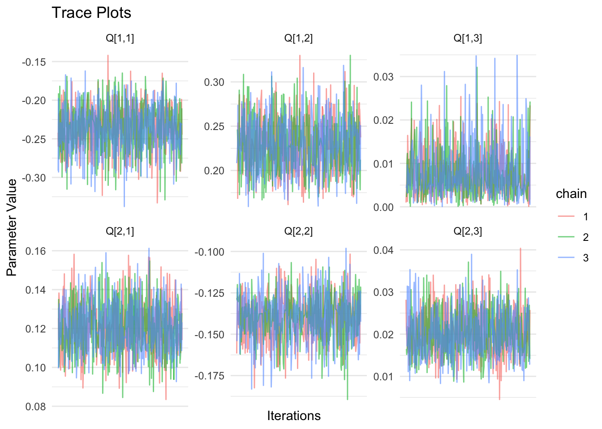
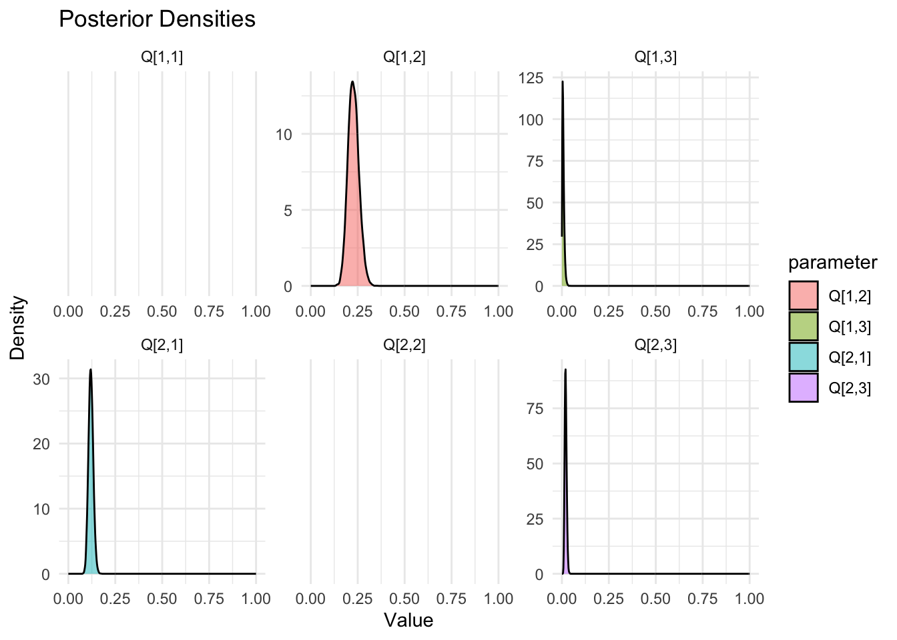

Show the code
library(rjags)
library(ggplot2)
library(coda)
library(dplyr)
library(tidyr)This document implements a new approach to solving the Kolmogorov Forward Equations for the 3-state absorbing continuous time Markov chain given an aggregate state table computed a a particular time. The approach is as follows:
library(rjags)
library(ggplot2)
library(coda)
library(dplyr)
library(tidyr)# Example state table: ST[i,j] = transitions from i to j
ST <- matrix(c(
0, 12, 5,
8, 0, 7,
0, 0, 20
), nrow = 3, byrow = TRUE)
# Total time spent in states 1 and 2
T_vec <- rowSums(ST)[1:2] # c(17, 15)
data_jags <- list(
ST = ST,
T = as.numeric(T_vec) # Ensure it's a numeric vector
)model_string <- "
model {
# Likelihood: Poisson transitions from state i to j
for (i in 1:2) {
for (j in 1:3) {
ST[i,j] ~ dpois(rate[i,j])
}
}
# State 3 is absorbing: no transitions out
for (j in 1:3) {
rate[3,j] <- 0
}
# Define rates from Q matrix
rate[1,1] <- 0
rate[1,2] <- q12 * T[1]
rate[1,3] <- q13 * T[1]
rate[2,1] <- q21 * T[2]
rate[2,2] <- 0
rate[2,3] <- q23 * T[2]
# Priors for off-diagonal rates
q12 ~ dgamma(1, 1)
q13 ~ dgamma(1, 1)
q21 ~ dgamma(1, 1)
q23 ~ dgamma(1, 1)
# Construct generator matrix Q
Q[1,1] <- - (q12 + q13)
Q[1,2] <- q12
Q[1,3] <- q13
Q[2,1] <- q21
Q[2,2] <- - (q21 + q23)
Q[2,3] <- q23
Q[3,1] <- 0
Q[3,2] <- 0
Q[3,3] <- 0
}
"
writeLines(model_string, "new_3state_solution.bug")# Initialize model
# Compile model
jags_model <- jags.model(file = "new_3state_solution.bug",
data = data_jags,
n.chains = 3,
n.adapt = 1000)Compiling model graph
Resolving undeclared variables
Allocating nodes
Graph information:
Observed stochastic nodes: 6
Unobserved stochastic nodes: 4
Total graph size: 25
Initializing model# Burn-in
update(jags_model, 1000)Extract Samples
# Sample from posterior
samples <- coda.samples(jags_model,
variable.names = c("Q"),
n.iter = 5000)samples_df <- as.data.frame(as.mcmc(do.call(rbind, samples)))
smry <- summary(samples)
smry
Iterations = 1001:6000
Thinning interval = 1
Number of chains = 3
Sample size per chain = 5000
1. Empirical mean and standard deviation for each variable,
plus standard error of the mean:
Mean SD Naive SE Time-series SE
Q[1,1] -1.0586 0.2435 0.001988 0.001951
Q[2,1] 0.5643 0.1898 0.001550 0.001550
Q[3,1] 0.0000 0.0000 0.000000 0.000000
Q[1,2] 0.7261 0.2023 0.001652 0.001641
Q[2,2] -1.0649 0.2601 0.002124 0.002171
Q[3,2] 0.0000 0.0000 0.000000 0.000000
Q[1,3] 0.3325 0.1359 0.001109 0.001109
Q[2,3] 0.5006 0.1762 0.001439 0.001444
Q[3,3] 0.0000 0.0000 0.000000 0.000000
2. Quantiles for each variable:
2.5% 25% 50% 75% 97.5%
Q[1,1] -1.5810 -1.2135 -1.0410 -0.8853 -0.6374
Q[2,1] 0.2591 0.4277 0.5428 0.6763 0.9930
Q[3,1] 0.0000 0.0000 0.0000 0.0000 0.0000
Q[1,2] 0.3845 0.5825 0.7072 0.8498 1.1692
Q[2,2] -1.6325 -1.2261 -1.0406 -0.8783 -0.6240
Q[3,2] 0.0000 0.0000 0.0000 0.0000 0.0000
Q[1,3] 0.1227 0.2336 0.3139 0.4117 0.6471
Q[2,3] 0.2209 0.3729 0.4787 0.6045 0.9068
Q[3,3] 0.0000 0.0000 0.0000 0.0000 0.0000# Convert mcmc.list to data frame and add chain + iteration info
df_long <- do.call(rbind, lapply(1:length(samples), function(chain) {
as.data.frame(samples[[chain]]) %>%
mutate(
iteration = row_number(),
chain = factor(chain)
)
})) %>%
pivot_longer(cols = -c(iteration, chain),
names_to = "parameter",
values_to = "value")# Define the number of rows to sample
n_sample <- 10000
# Take a random sample of n_sample rows
#f) gets the total number of rows in the data frame
# sample(nrow(df), n_sample) generates n_sample random row indices
# df[...] then subsets the data frame using these random indices
random_sample_df <- df_long[sample(nrow(df_long), n_sample), ]
ggplot(random_sample_df %>% filter(parameter %in% c("Q[1,1]", "Q[1,2]", "Q[1,3]",
"Q[2,1]", "Q[2,2]", "Q[2,3]")),
aes(x = iteration, y = value, color = chain)) +
geom_line(alpha = 0.6) +
facet_wrap(~parameter, scales = "free_y") +
labs(title = "Trace Plots", x = "Iterations", y = "Parameter Value") +
theme_minimal() +
scale_x_continuous(breaks = n_sample)
ggplot(df_long %>% filter(parameter %in% c("Q[1,1]", "Q[1,2]", "Q[1,3]",
"Q[2,1]", "Q[2,2]", "Q[2,3]")),
aes(x = value, fill = parameter)) +
geom_density(alpha = 0.5) +
facet_wrap(~parameter, scales = "free") +
xlim(0,1) +
labs(title = "Posterior Densities", x = "Value", y = "Density") +
theme_minimal()
Functions to compute transition Probabilities
# Define symbolic transition probability functions
compute_P <- function(t, q12, q13, q21, q23) {
# Define shorthand
alpha <- q12 + q13
beta <- q21 + q23
delta <- sqrt((alpha - beta)^2 + 4 * q12 * q21)
lambda1 <- (- (alpha + beta) + delta) / 2
lambda2 <- (- (alpha + beta) - delta) / 2
# Transition probabilities from state 1
P11 <- ((lambda1 + alpha) / (lambda1 - lambda2)) * exp(lambda2 * t) +
((lambda2 + alpha) / (lambda2 - lambda1)) * exp(lambda1 * t)
P12 <- (q12 / (lambda1 - lambda2)) * (exp(lambda1 * t) - exp(lambda2 * t))
P13 <- 1 - P11 - P12
# Transition probabilities from state 2
P21 <- (q21 / (lambda1 - lambda2)) * (exp(lambda1 * t) - exp(lambda2 * t))
P22 <- ((lambda1 + beta) / (lambda1 - lambda2)) * exp(lambda2 * t) +
((lambda2 + beta) / (lambda2 - lambda1)) * exp(lambda1 * t)
P23 <- 1 - P21 - P22
# Transition probabilities from absorbing state 3
P31 <- 0
P32 <- 0
P33 <- 1
# Assemble full transition matrix
P <- matrix(c(
P11, P12, P13,
P21, P22, P23,
P31, P32, P33
), nrow = 3, byrow = TRUE)
return(P)
}Compute Transition Probabilities
# Define rates
q12 <- mean(samples_df$"Q[1,2]")
q13 <- mean(samples_df$"Q[1,3]")
q21 <- mean(samples_df$"Q[2,1]")
q23 <- mean(samples_df$"Q[2,3]")
t <- 12
P <- compute_P(t, q12, q13, q21, q23)
round(P,4) [,1] [,2] [,3]
[1,] 0.0032 0.0036 0.9932
[2,] 0.0028 0.0032 0.9940
[3,] 0.0000 0.0000 1.0000We assume:
\[Q = \begin{bmatrix} - (q_{12} + q_{13}) & q_{12} & q_{13} \\ q_{21} & - (q_{21} + q_{23}) & q_{23} \\ 0 & 0 & 0 \end{bmatrix}\]
\[\alpha = q_{12} + q_{13}, \quad \beta = q_{21} + q_{23}\]
\[\frac{d}{dt} \mathbf{p}(t) = Q \mathbf{p}(t), \quad \mathbf{p}(0) = \begin{bmatrix} 1 \\ 0 \\ 0 \end{bmatrix}\]
This gives the system:
\[\begin{aligned} \frac{dp_1}{dt} &= -\alpha p_1 + q_{21} p_2 \\ \frac{dp_2}{dt} &= q_{12} p_1 - \beta p_2 \\ \frac{dp_3}{dt} &= q_{13} p_1 + q_{23} p_2 \end{aligned}\]
This is a linear system of two first-order ODEs. We write it in matrix form:
\[\frac{d}{dt} \begin{bmatrix} p_1(t) \\ p_2(t) \end{bmatrix} = \begin{bmatrix} - \alpha & q_{21} \\ q_{12} & - \beta \end{bmatrix} \begin{bmatrix} p_1(t) \\ p_2(t) \end{bmatrix}\]
Let this matrix be ùê¥. The solution is:
\[\begin{bmatrix} p_1(t) \\ p_2(t) \end{bmatrix} = e^{A t} \begin{bmatrix} 1 \\ 0 \end{bmatrix}\]
\[\lambda_{1,2} = \frac{- (\alpha + \beta) \pm \sqrt{(\alpha - \beta)^2 + 4 q_{12} q_{21}}}{2}\] Let:
\[\delta = \sqrt{(\alpha - \beta)^2 + 4 q_{12} q_{21}}, \quad \lambda_1 = \frac{- (\alpha + \beta) + \delta}{2}, \quad \lambda_2 = \frac{- (\alpha + \beta) - \delta}{2}\]
Using variation of parameters or Laplace transforms, we obtain:
\[\begin{aligned} p_1(t) &= \left( \frac{\lambda_1 + \alpha}{\lambda_1 - \lambda_2} \right) e^{\lambda_2 t} + \left( \frac{\lambda_2 + \alpha}{\lambda_2 - \lambda_1} \right) e^{\lambda_1 t} \\ p_2(t) &= \frac{q_{12}}{\lambda_1 - \lambda_2} \left( e^{\lambda_1 t} - e^{\lambda_2 t} \right) \end{aligned}\]
\[\frac{dp_3}{dt} = q_{13} p_1(t) + q_{23} p_2(t)\] Then:
\[p_3(t) = \int_0^t \left( q_{13} p_1(s) + q_{23} p_2(s) \right) ds\]
But since total probability must sum to 1:
\[p_3(t) = 1 - p_1(t) - p_2(t)\]
\[\begin{aligned} P_{11}(t) &= p_1(t) \\ P_{12}(t) &= p_2(t) \\ P_{13}(t) &= 1 - p_1(t) - p_2(t) \end{aligned}\]
Repeat the same process with initial condition ùëù(0)=[0,1,0]‚ä§. The structure is symmetric, and the solutions are:
\[\begin{aligned} P_{21}(t) &= \frac{q_{21}}{\lambda_1 - \lambda_2} \left( e^{\lambda_1 t} - e^{\lambda_2 t} \right) \\ P_{22}(t) &= \left( \frac{\lambda_1 + \beta}{\lambda_1 - \lambda_2} \right) e^{\lambda_2 t} + \left( \frac{\lambda_2 + \beta}{\lambda_2 - \lambda_1} \right) e^{\lambda_1 t} \\ P_{23}(t) &= 1 - P_{21}(t) - P_{22}(t) \end{aligned}\]
\[P_{31}(t) = 0, \quad P_{32}(t) = 0, \quad P_{33}(t) = 1\]